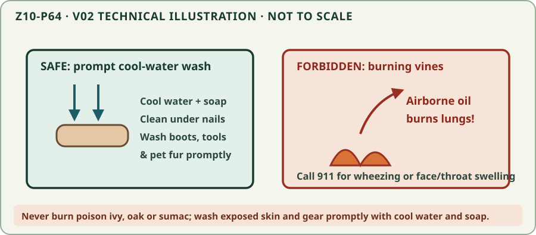

Z10-P64 · Wilderness medicine · New manuscript
Wash urushiol oils promptly and avoid deadly poison-ivy smoke inhalation
Limit contact dermatitis from poison ivy, oak, or sumac through fast cold-water washing and prevent severe lung injury from burning vines.
When it applies · Wooded, shoreline, and trailside brush in Upper Midwest and North American habitats.
Equipment · Cool safe water, mild soap, clean spare clothing, and sealed bag for contaminated garments/boots.

Actions
- If exposed to suspected poison ivy, oak, or sumac, rinse skin thoroughly as soon as possible with COOL running water and mild soap (avoiding hot water initially, and scrubbing gently under fingernails) to wash away sticky urushiol oil before it binds.[M06, M15]
- Isolate and wash contaminated clothing, shoelaces, tools, and pet fur carefully—urushiol oil remains active on fabric and gear for months and spreads easily to faces and eyes, whereas rash blister fluid itself does NOT spread the rash.[M06, ED]
- NEVER burn poison ivy, oak, or sumac brush in campfires or yard piles—inhaling urushiol smoke causes severe, life-threatening airway and lung swelling requiring immediate 911 emergency care.[M15, T02]
Failure recognition · Tossing dead hairy poison-ivy vines onto a campfire and inhaling toxic smoke, or wiping unwashed oily hands across the eyes.[M15, M18]
Verify · Confirm exposed skin, fingernails, and tools were washed thoroughly with cool soap/water and zero vines enter any fire.[M06, M15]
Stop or change course · Any facial/eye swelling, widespread blistering, breathing difficulty after smoke exposure, or signs of secondary skin infection require prompt clinical care.[M15, M06, T02]
Evidence and editorial notes
- M06 · NIH / MedlinePlus · Wounds and Injuries (current web edition)
- Section: Minor Wound Cleaning, Protection, and Infection Red Flags · Conditions: Superficial cuts, scrapes, and abrasions with potable water available
Support: Rinse minor wounds thoroughly with clean potable water, cover with a clean sterile dressing, and monitor for worsening redness, warmth, swelling, pus, red streaks, or fever.
Limitations: Deep punctures, animal bites, retained foreign bodies, or heavily contaminated wounds require clinical evaluation and tetanus review. · Conflicting evidence: None; separates clean potable rinsing from harsh chemical wound scrubbing.
Editorial note: Anchors field wound hygiene and infection escalation cards. · Specialist reviewer: Wilderness medicine and wound care
Primary source · checked 2026-11-24 - M15 · NIH / MedlinePlus · Poisoning (current web edition)
- Section: Suspected Poisoning, Ingestion, and Toxic Exposure · Conditions: Accidental ingestion, inhalation, or skin/eye contact with toxic plants, chemicals, or medications
Support: Call 911 immediately if the person is unresponsive, seizing, or struggling to breathe; otherwise contact Poison Control (1-800-222-1222 in the U.S.) with exact substance details and do not induce vomiting unless directed.
Limitations: Improvised emetics or charcoal can worsen caustic or hydrocarbon injury. · Conflicting evidence: None; aligns with Poison Control guidance.
Editorial note: Separates 911 life-threat activation from Poison Control guidance. · Specialist reviewer: Medical toxicology and poison control
Primary source · checked 2026-11-24 - M18 · NIH / MedlinePlus · Eye Injuries (current web edition)
- Section: Eye Injuries, Flushing, and Penetrating Trauma Limits · Conditions: Dust/chemical splash vs blunt or penetrating eye trauma
Support: Flush chemical splashes or loose surface grit gently with clean potable water or sterile saline; never rub the eye, never remove an embedded object, shield without pressure, and seek urgent eye care.
Limitations: Forcing open swollen eyelids or pulling embedded debris causes irreversible vision loss. · Conflicting evidence: None; separates surface irrigation from penetrating-eye shield protection.
Editorial note: Core eye-trauma decision boundary in Z10. · Specialist reviewer: Ophthalmology and emergency medicine
Primary source · checked 2026-11-24 - T02 · American Red Cross · First Aid Steps (current web edition)
- Section: First Aid Steps > Call 9-1-1 · Conditions: Lay emergency response to unresponsiveness, abnormal breathing or severe bleeding
Support: Activate EMS and get needed equipment. Follow dispatcher directions and act within training.
Limitations: Remote locations may delay EMS arrival, requiring sustained stabilization after activation. · Conflicting evidence: None; aligns with NPS-E.
Editorial note: Mandates early emergency activation and dispatcher adherence. · Specialist reviewer: EMS and wilderness medicine
Primary source · checked 2026-11-24
Source lineage · NIH MedlinePlus Wounds and Poisoning; new manuscript · Classification · New manuscript.